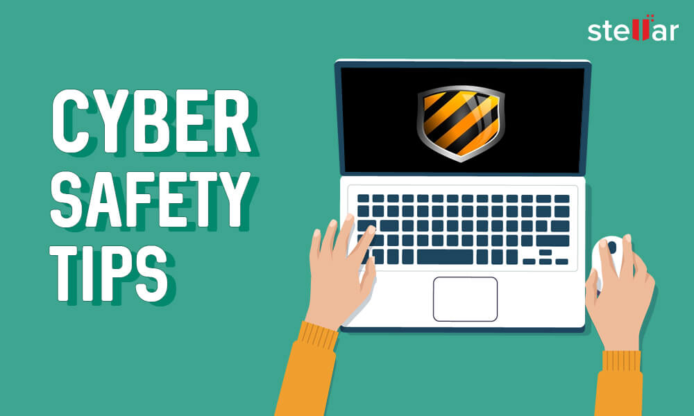

1. Keep Personal Information Professional and Limited
Your personal relationship status or home address are not required information for potential employers or comsumers. They must be aware of your skills and professional experience, as well as how to contact you. You wouldn't give out solely personal information to strangers one-on-one, so why would you give it out to millions of people online?
2. Keep Your Privacy Settings On
Marketers and hackers both want to know everything about you. Your browsing and social media habits can teach both of you a lot. However, you have control over your data. According to Lifehacker, both web browsers and mobile operating systems include privacy options that can be used to preserve your online privacy. Privacy-enhancing features are also available on major websites like Facebook. Companies desire your personal information for its marketing worth, thus these settings are sometimes(deliberately) difficult to uncover. Make sure you have these privacy measures enabled and that you keep them enabled.
3. Practice Safe Browsing
You woudn't go through a dangerous neighborhood, so don't go online and visit unsafe neghborhoods. Lurid information is used as bait by cybercriminals. They understand that comsumers are ocasionally enticed by questionable content and may relax their guard when looking for it. The demimonde of the internet is full of hidden dangers, where a single thoughtless click cloud reveal personal information or infect your device with malware. You don't even give the hackers a chance if you resist the desire.
4. Make Sure Your Internet Connection is Secure. Use a Secure VPN Connection.
PcMag points out that when you go online in a public setting, such as via a publec Wi-Fi connection, you have no direct control over its security. Endpoints - the locations where a private network interfaces to the outside world - are a source of concern for corporate cybersecurity specialists. Your local internet connection is your susceptible endpoint. Check to see if your device is secure, and if in doubt, wait until a better moment(i.e., when you can connect to a secure Wi-Fi network) before entering sensitive information like your bank account number.
Use a secure VPN connection to boost your internet browsing security even more(virtual private network). A virtual private network(VPN) allows you to establish a secure connection between your device and an internet server, ensuring that no one can monitor or read the information you exchange.
5. Be Careful What You Download
Cybercriminals are mostly interested in tricking you into downloading malware - programs or apps that contain malware or attempt to steal information. This malware can be camouflaged as an app, which couble be anything form a famous game to a traffic or weather app. Downloading apps that appear suspicious or come form a site you don't trust is not a good idea, according to PCWorld.
6. Choose Strong Passwords
Passwords are one of the most vulnerable parts of the internet security system, and there is currently no way to avoid them. And the trouble with passwords is that individuals tend to use-easy-to-remember ones(like "password" and "123456"), which are equally easy to guess for cyber criminals. Choose strong passwords that are difficult for attackers to crack. You can use password management software to keep track of several passwords so you don't forget them. A strong password is one that is both unique and complicated consisting of at least 15 characters that include letters, numbers, and special characters.
7. Make Online Purchases From Secure Sites
When you make as online purchase, you must supply credit card or bank account information, which is exactly what fraudsters are after. Provide this information only to sites that offer secure, encrypted connections. Secure sites can be identified by looking for an address that begins with https:(the S stands for secure) rather than simply http:, according to Boston University. A padlock icon next to the address bar may also indicate them.
8. Be Careful What You Post
As the young contender in New Hampshire discovered, the Internet doesn't have a delete key. Because removing the original(say, from Twiter) doesn't erase any copies generated by others, any comment or image you put online could stay online idefinitely. You can't "take back" a comment you regret making or delete an embarrassing selphie you snapped at a party. Don't post anything you wouldn't want your mother or a potential employer to see on internet.
9. Be Careful Who You Meet Online
People you meet on the internet aren't always who they are. It is possible that they're not even real. Fake social network profiles are a popular way for hackers to snuggle up to naive Web users and pick their online wallets, according to InfoWorld. Maintain the same level of caution and common sense in your online social life that you do in your offline social life.

10. Keep Your Antivirus Program Up to Date
Although Internet security software won't protect you form every attack, it will detect and delete the vast majority of malware - just make sure it's up to date. Make sure you're up to date on your operating system and any applications you're using. They add an important layer of protection.
If you follow these ten fundamental Internet safety guidelines, you'l be able to avoid many of the unpleasent schocks that lurk online for the unwary.